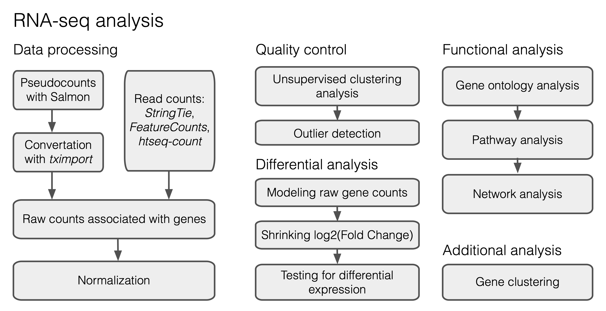
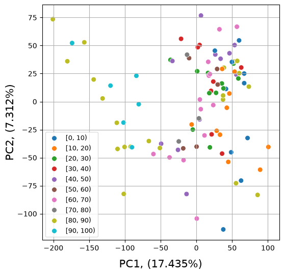
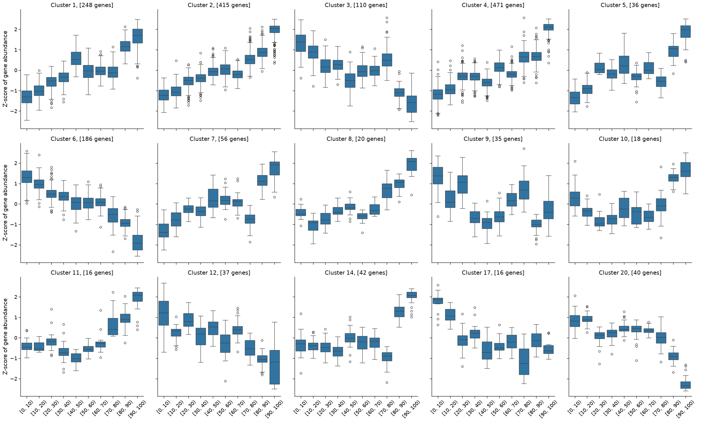
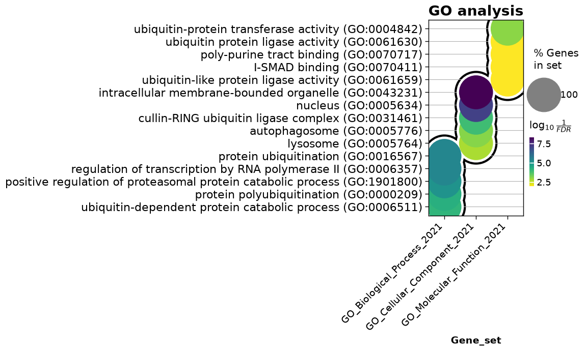

2. Differential expression analysis#
Today we are going to learn how to perform differential expression analysis on aging bulk RNA-seq datasets. For this lesson we prepared longitudinal RNA-seq data on aged human fibroblasts from Fleischer et al. [2018]. This data is already processed; therefore we can skip a large part devoted to raw read processing and mapping (Fig. 2.1) and start with a table of counts.

Fig. 2.1 A typical workflow for DE analysis.#
2.1. Preparing the data#
We will start with uploading the expression data table together with the meta file containing a brief sample description (age, ethnicity). While the original study includes both male and female profiles, we selected only the male ones for simplicity of further analysis. Processed files (data_fibroblasts.csv and meta_fibroblasts.csv) are available here: https://www.dropbox.com/scl/fo/ma7zolpu62s9lcybjlc4h/AFIw64bZXGLumx9QJCfzCD4?rlkey=3agxgg1g91ehqa3rpordereyl&dl=0
import numpy as np
import pandas as pd
from collections import Counter
path_data = "data/data_fibroblasts.csv" # change this with your actual path to data file
raw_counts = pd.read_csv(path_data, index_col=0)
Check the number of gene features and the number of samples available in the dataset:
print("Number of genes:", raw_counts.shape[0])
print("Number of samples:", raw_counts.shape[1])
Number of genes: 29744
Number of samples: 99
This table includes expression profiles of 99 samples with 29744 genes detected. However, some of these genes can have zero expression values across samples. We will filter them out:
raw_counts = raw_counts.loc[~(raw_counts==0).all(axis=1)]
raw_counts.shape
(24033, 99)
Then we will load the meta file with sample descriptions:
path_meta = "data/meta_fibroblasts.csv" # change this with your actual path to meta file
meta = pd.read_csv(path_meta, index_col=0)
meta.head(10)
| Age | Ethnicity | |
|---|---|---|
| SRX4022456 | 1 | Asian |
| SRX4022457 | 12 | Caucasian |
| SRX4022459 | 25 | Caucasian |
| SRX4022461 | 26 | Caucasian |
| SRX4022463 | 28 | Caucasian |
| SRX4022464 | 29 | Caucasian |
| SRX4022465 | 29 | Caucasian |
| SRX4022466 | 30 | Caucasian |
| SRX4022468 | 30 | Caucasian |
| SRX4022469 | 30 | Caucasian |
Let’s check the age range of our samples using the information from the first column of the meta:
print("Minimal age:", min(meta.Age.values))
print("Maximal age:", max(meta.Age.values))
Minimal age: 1
Maximal age: 96
To perform further analysis we will divide samples into age groups with a step = 10 years.
bins = pd.cut(meta["Age"], np.arange(0, meta["Age"].max() + 10, 10), right=False)
meta["AgeBins"] = bins.cat.codes # index of the age group: 0 for [0, 10), 1 for [10, 20), ...
meta["AgeRanges"] = bins.astype(str)
meta.head()
| Age | Ethnicity | AgeBins | AgeRanges | |
|---|---|---|---|---|
| SRX4022456 | 1 | Asian | 0 | [0, 10) |
| SRX4022457 | 12 | Caucasian | 1 | [10, 20) |
| SRX4022459 | 25 | Caucasian | 2 | [20, 30) |
| SRX4022461 | 26 | Caucasian | 2 | [20, 30) |
| SRX4022463 | 28 | Caucasian | 2 | [20, 30) |
2.2. Setting up DESeq2#
We will run DESeq2 with InMoose, a Python port of the DESeq2 R package. InMoose does not implement the likelihood ratio test (LRT) yet, so the hidden cell below adds a port of the corresponding DESeq2 function to it.
from inmoose.deseq2 import DESeqDataSet, DESeq
from inmoose.deseq2.vst import varianceStabilizingTransformation
class DESeq2():
def __init__(self, counts, meta, design):
# InMoose expects samples in rows and genes in columns
self.raw_counts = counts.T.round().astype(int)
self.meta_raw = meta
self.meta = meta.astype("category")
self.design = design
def create_deseq_object(self):
self.dds = DESeqDataSet(self.raw_counts, clinicalData=self.meta, design=self.design)
def normalization(self):
self.dds = self.dds.estimateSizeFactors()
norm_counts = pd.DataFrame(self.dds.counts(normalized=True),
index=self.raw_counts.index, columns=self.raw_counts.columns)
return norm_counts.T
def transformation(self):
mat = varianceStabilizingTransformation(self.dds, blind=True)
return pd.DataFrame(mat.X, index=self.raw_counts.index, columns=self.raw_counts.columns).T
def LRT_testing(self):
self.dds = DESeq(self.dds, test="LRT", reduced="~1", quiet=True)
res = pd.DataFrame(self.dds.results())
return res.rename(columns={"adj_pvalue": "padj"})
def clustering(self, cluster_mat):
return degPatterns(cluster_mat, self.meta_raw, time="AgeBins")
2.3. Normalization#
Specify a design formula for statistical testing with DESeq2 (it is important to put the factor of interest at the end of the formula!):
design = "~AgeBins"
d = DESeq2(raw_counts, meta, design)
Initialize a DESeq2 object with our data:
d.create_deseq_object()
Perform DESeq2 normalization:
ncounts = d.normalization()
Then transform the data using the variance stabilizing transformation (VST) to get rid of heteroskedasticity:
vst_mat = d.transformation()
2.4. Quality control#
Before differential analysis we will explore the similarity of the samples in the age groups.
2.4.1. Principal Component Analysis#
import matplotlib.pyplot as plt
import seaborn as sns
from sklearn.decomposition import PCA
from sklearn.preprocessing import StandardScaler
x = np.transpose(vst_mat.values)
x = StandardScaler().fit_transform(x)
pca = PCA(n_components=2, random_state=0)
principalComponents = pca.fit_transform(x)
principalDf = pd.DataFrame(data = principalComponents, columns = ['PC1', 'PC2'])
pcdf = pd.concat([principalDf.set_index(meta.index), meta], axis = 1)
fig, ax = plt.subplots(figsize=(6, 6))
sns.set_context("paper", font_scale=1.5)
age_order = meta.sort_values("AgeBins")["AgeRanges"].unique()
sns.scatterplot(data=pcdf, x="PC1", y="PC2", hue="AgeRanges", hue_order=age_order, s = 50)
var_pc1 = (pca.explained_variance_ratio_[0]*100).round(3)
var_pc2 = (pca.explained_variance_ratio_[1]*100).round(3)
plt.xlabel('PC1, ('+ var_pc1.astype(str) + "%)", fontsize = 15, labelpad = 10)
plt.ylabel('PC2, ('+ var_pc2.astype(str) + "%)", fontsize = 15, labelpad = 2)
plt.legend(fontsize=9)
ax.grid()

Exercise 1
Perform PCA on the top 500 most variable genes in the dataset (1 point).
2.5. Statistical testing#
Run the Likelihood Ratio Test (LRT) available in the DESeq2 package:
%%capture
res = d.LRT_testing()
Sort genes by the adjusted p-value:
res = res.sort_values(by=['padj', 'pvalue'], kind='stable')
Retrieve all the genes satisfying the p-value cut-off criterion \(P<0.05\):
sig = res[res['padj'] < 0.05]
Check the number of significant genes:
print("Number of DE genes:", sig.shape[0])
Number of DE genes: 8447
Exercise 2
Determine the number of up- and down-regulated genes in the analysis (0.5 points). Investigate the top 10 DE genes from the up and down lists. Do they have any established connection with aging? If yes, support your claim with some references and a short description of their functions (1.5 points).
2.6. Gene clustering#
To perform gene clustering we will select only a subset of significant genes, let’s say the 1800 most significant features:
ngenes = 1800
cluster_mat = vst_mat.loc[sig.head(ngenes).index]
Perform gene clustering with degPatterns, a Python port of the function from the DEGreport R package (the code is hidden in the cell below):
%%capture
content, clust_data = d.clustering(cluster_mat)
The function above returned 15 clusters consisting of more than 15 genes that are similar in their expression patterns.
Counter(content.cluster.tolist())
Counter({4: 471,
2: 415,
1: 248,
6: 186,
3: 110,
7: 56,
14: 42,
20: 40,
12: 37,
5: 36,
9: 35,
8: 20,
10: 18,
11: 16,
17: 16})
We can use the content of the clust_data dataframe to explore the obtained expression patterns and plot them with the seaborn library:
g = sns.catplot(data=clust_data,
x='AgeRanges',
y='value',
col='cluster',
kind='box',
col_wrap=5,
col_order=sorted(content.cluster.unique()),
order= np.unique(clust_data.AgeRanges.values))
g.set_axis_labels("", "Z-score of gene abundance")
g.tick_params(axis='x', rotation=45)
axes = g.axes.flatten()
gene_number = Counter(content.cluster.tolist())
cluster_ids = sorted(gene_number)
for i in range(len(axes)):
axes[i].set_title("Cluster " + str(cluster_ids[i]) + ", [" + str(gene_number[cluster_ids[i]]) + " genes]")

2.7. GO analysis#
import gseapy
from gseapy import dotplot
Select a cluster for the GO analysis:
cluster_id = 2
enr = gseapy.enrichr(gene_list = list(content[content['cluster'] == cluster_id].genes.values),
background = res.index.values,
gene_sets=['GO_Biological_Process_2021',
'GO_Cellular_Component_2021',
'GO_Molecular_Function_2021'],
organism='human',
outdir=None)
For simplicity, we will drop non-informative columns and keep the terms possessing ‘Adjusted P-value’ < 0.05:
enr_res = enr.results.drop(columns=["Old P-value", "Old adjusted P-value", "Old Adjusted P-value"], errors="ignore")
enr_res = enr_res[enr_res['Adjusted P-value'] < 0.05]
To visualize the top 5 enrichment terms from each set (Biological Process, Cellular Component, Molecular Function), we can apply the dotplot function from gseapy:
dotplot(enr_res,
column="Adjusted P-value",
x='Gene_set',
size=10,
top_term=5,
figsize=(3,5),
title = "GO analysis",
xticklabels_rot=45,
show_ring=True,
marker='o',
)
<Axes: title={'center': 'GO analysis'}, xlabel='Gene_set'>

Exercise 2
Perform GO analysis on genes from clusters 1, 3, 4 and prepare figures showing the top 5 enriched terms (if possible) (1 point).
Exercise 3
Perform enrichment analysis on genes from clusters 1, 3, 4 using aging-related databases: ‘Aging_Perturbations_from_GEO_down’, ‘Aging_Perturbations_from_GEO_up’ and ‘GTEx_Aging_Signatures_2021’ (1 point).
2.8. Learn more#
Detailed manual on differential expression analysis with DESeq2 in R
RNA-seq analysis with Python
Omics Data Analysis course at Skoltech (MA060061)
2.9. Credits#
This notebook was prepared by Dmitrii Smirnov.
2.10. References#
Jason G. Fleischer, Roberta Schulte, Hsiao H. Tsai, Swati Tyagi, Arkaitz Ibarra, Maxim N. Shokhirev, Ling Huang, Martin W. Hetzer, and Saket Navlakha. Predicting age from the transcriptome of human dermal fibroblasts. Genome Biology, 19(1):221, 2018. doi:10.1186/s13059-018-1599-6.